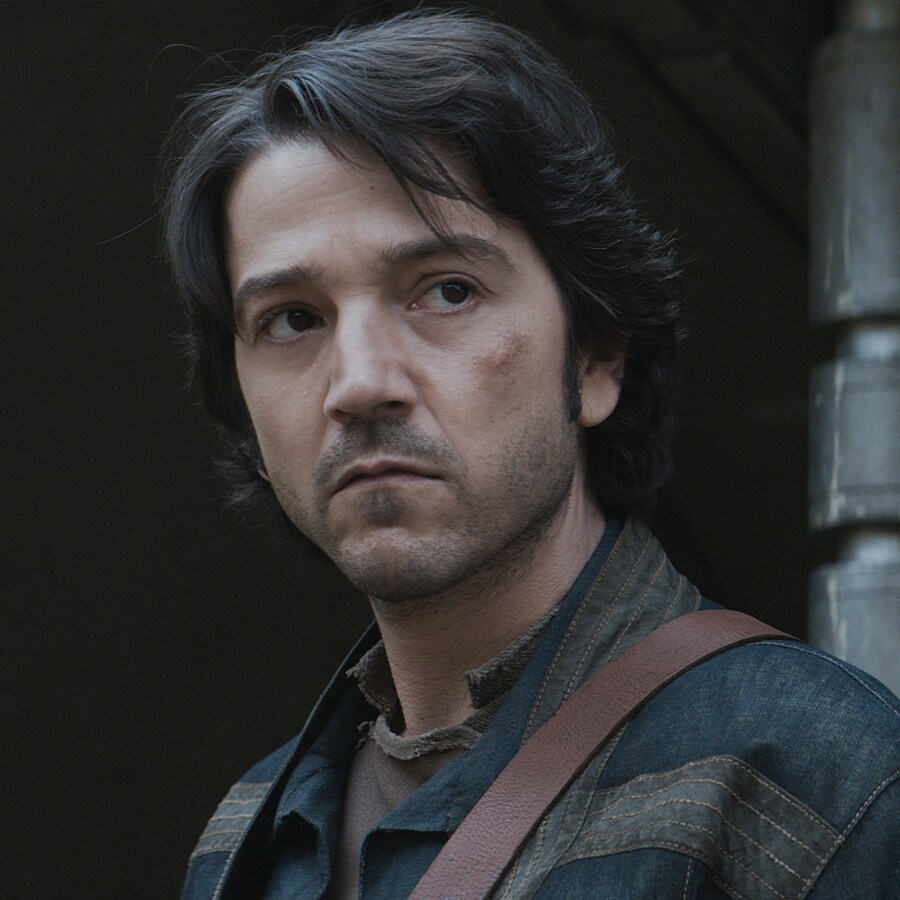

Diego Luna
Cassian Andor

Diego Luna is een Mexicaanse acteur, regisseur en producent, geboren op 29 december 1979 in Mexico-Stad. Hij werd internationaal bekend door zijn rollen in films zoals Y Tu Mamá También en Rogue One: A Star Wars Story. Luna staat bekend om zijn veelzijdigheid en charme op het scherm, maar ook om zijn inzet voor Latijns-Amerikaanse cinema en sociale projecten. Naast acteren heeft hij meerdere films en series geproduceerd en geregisseerd.